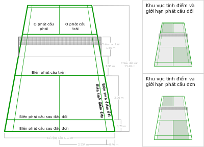
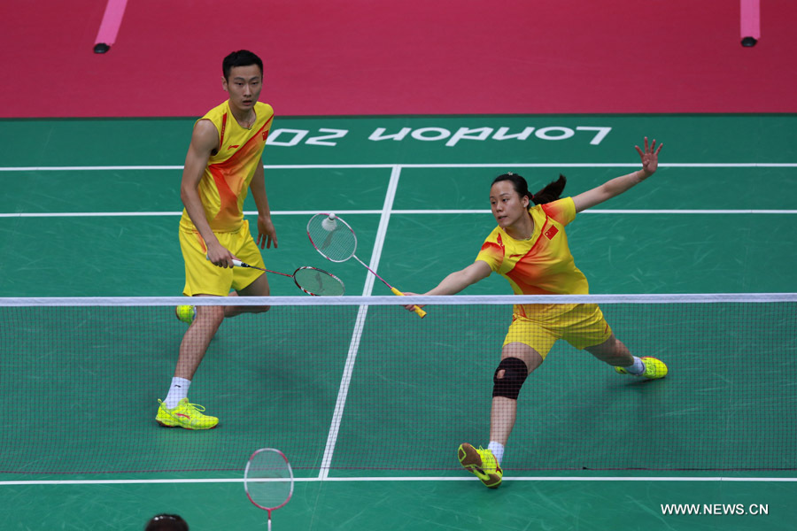

Luật cầu lông đôi nam, đôi nam nữ, đôi nữ
Thi đấu đôi trong cầu lồng gồm: Đánh đôi nam, đôi nam nữ và đôi nữ. Để thi đấu tốt trong đánh đôi bạn cần có kỹ
chiến thuật tốt, tin thần đồng đội và sự hiểu ý nhau giữa 2 thành viên. Sau đây
Thanh Hải Dev
xin giới thiệu cho các bạn
luật cầu lông đôi cơ bản
:
1/ Kích thước sân chuẩn cho đánh đôi:
Chiều rộng tối đa của sân là 6,1 m (20 ft). Tổng chiều dài sân là 13,4 m (44 ft). Phần sân phát cầu được giới hạn trong
vạch chia giữa sân, biên phát cầu trên nằm cách lưới 1,98 m (6 ft 6 inch), và vạch biên tính điểm cùng biên phát
cầu sau. Trong nội dung đánh đôi, phần biên phát cầu sau là vạch dài cách biên.

Mép trên lưới có độ cao là 1,55 m (5 ft 1 inch) ở biên và 1.524 m (5 ft) ở giữa. Cột chăng lưới nằm ở ngoài vạch biên
tính điểm đôi.
2/ Phát cầu trong đánh đôi:
Phần khác biệt nhất giữa luật cầu lông đơn và
luật cầu lông đôi
là phát cầu nhận cầu và trả cầu:
- Ô giao cầu và ô nhận cầu:
– Một VĐV bên giao cầu sẽ giao cầu từ ô giao cầu bên phải khi bên họ chưa ghi điểm hoặc ghi được điểm chẵn trong
ván đó.
– Một VĐV bên giao cầu sẽ giao cầu từ ô giao cầu bên trái khi họ ghi được điểm lẻ trong ván đó.
– VĐV có quả giao cầu lần cuối trước đó của bên giao cầu sẽ giữ nguyên vị trí đứng mà từ ô đó VĐV này đã thực
hiện lần giao cầu cuối cho bên mình. Mô hình ngược lại sẽ được áp dụng cho đồng đội của người nhận cầu.
– VĐV của bên nhận cầu đang đứng trong ô giao cầu chéo đối diện sẽ là người nhận cầu.
– VĐV sẽ không thay đổi vị trí đứng tương ứng của mình cho đến khi họ thắng một điểm mà bên của họ đang nắm
quyền giao cầu.
– Bất kỳ lượt giao cầu nào cũng được thực hiện từ ô giao cầu tương ứng với số điểm mà bên giao cầu đó có, ngoại
trừ các trường hợp nêu ở Điều 12.
- Thứ tự đánh cầu và vị trí trên sân: Sau khi quả giao cầu được đánh trả, cầu được đánh luân phiên bởi một trong hai
VĐV của bên giao cầu và một trong hai VĐV của bên nhận cầu cho đến khi cầu không còn trong cuộc (Điều 15).
- Ghi điểm và giao cầu:
– Nếu bên giao cầu thắng pha cầu, họ sẽ ghi cho mình một điểm. Người giao cầu tiếp tục thực hiện quả giao cầu
từ ô giao cầu tương ứng còn lại.
– Nếu bên nhận cầu thắng pha cầu, họ sẽ ghi cho mình một điểm. Bên nhận cầu lúc này trở thành bên giao cầu mới.

- Trình tự giao cầu: Trong bất kỳ ván nào, quyền giao cầu cũng được chuyển tuần tự:
– Từ người giao cầu đầu tiên khi bắt đầu ván đấu ở ô giao cầu bên phải.
– Đến đồng đội của người nhận cầu đầu tiên. Lúc này quả giao cầu được thực hiện từ ô giao cầu bên trái.
– Sang đồng đội của người giao cầu đầu tiên.
– Đến người nhận cầu đầu tiên.
– Trở lại người giao cầu đầu tiên, và cứ tiếp tục như thế.
- Không VĐV nào được giao cầu sai phiên, nhận cầu sai phiên, hoặc nhận hai quả giao cầu liên tiếp trong cùng một ván
đấu, ngoại trừ các trường hợp nêu ở Điều 12.
- Bất kỳ VĐV nào của bên thắng ván cũng có thể giao cầu đầu tiên ở ván tiếp theo, và bất kỳ VĐV nào của bên thua ván
cũng có thể nhận cầu đầu tiên ở ván tiếp theo.